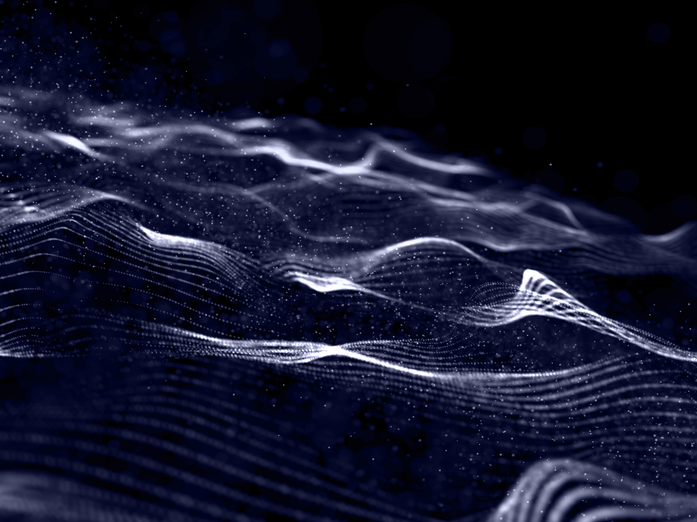
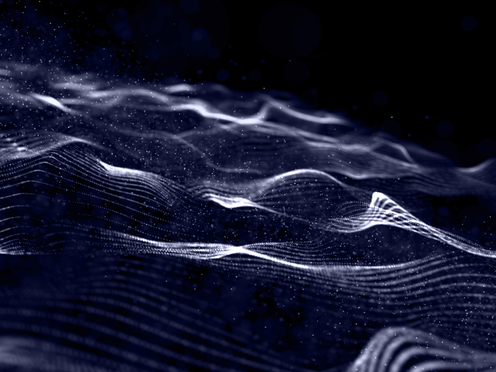

Explora les Transicions CSS
Aquesta pàgina mostra com les transicions poden donar vida als elements web amb efectes suaus i elegants.
Comença ara
Animació dinàmica

Luces neón futuristas
 

Tecnología abstracta